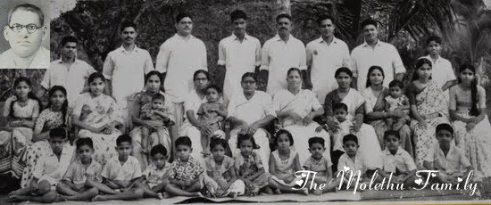

Welcome to the website of
The Molethu Family!
We are based in Adoor, of Kerala, India, founded by Mr. Molethu Geevarghese (M.G.) Varghese and Mrs. Saramma Varghese. The family consists of 9 children, 48 grandchildren, numerous amount of great grandchildren, and many more to come as the future generation of the Molethu heritage continuously blossoms. We have grown successfully with the help of God in our lives worldwide. We hope you enjoy this website as a useful resource tool for news, archives, and much more!
Our Family Ancestry
Mr. M.G. Varghese & Mrs. Saramma Varghese
George Varghese - 9 children
Thomas Varghese - 6 children
Mariamma John - 5 children
John Varghese - 8 children
Ponnamma Varghese - 4 children
Abraham Varghese - 6 children
Rachel Varghese - 3 children
Joseph Varghese - 3 children
David Varghese - 4 children